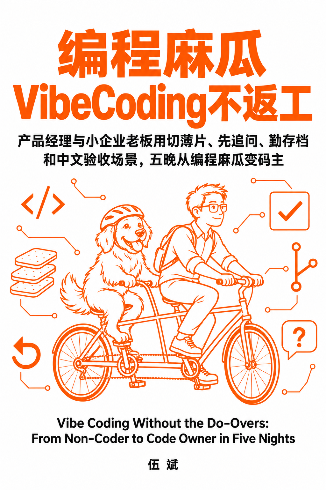

编程麻瓜 vibe coding，怎样不返工？
编程麻瓜VibeCoding不返工 · 开放电子书 ＋ 五晚“不返工陪蹬营”

编程麻瓜
VibeCoding
不返工
VibeCoding
不返工
产品经理与小企业老板用切薄片、先追问、勤存档和中文验收场景，五晚从编程麻瓜变码主
Vibe Coding Without the Do-Overs:
From Non-Coder to Code Owner in Five Nights
From Non-Coder to Code Owner in Five Nights
01 / 用完即弃（第 1～3 晚）
做给自己用，做完就够
两类小软件都要先过这一关
不再一遍遍改提示词、推倒重来。
切薄片 → 先追问 → 勤存档
一次只蹬一片，改坏了随时退回。
一次只蹬一片，改坏了随时退回。
02 / 长期维护（第 4～5 晚）
给别人用，持续改
加功能不改坏，能上线、能交接
加了新功能，旧功能也不坏。
中文验收场景 → 自动测试 → 上线交接
从编程麻瓜，变成能掌握方向的“码主”。
从编程麻瓜，变成能掌握方向的“码主”。
“不返工”＝不再推倒重来：返工只发生在一小步之内，随时能回到上一个能用的版本。
AI 负责蹬，你负责掌舵。
AI 负责蹬，你负责掌舵。